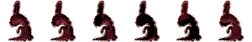
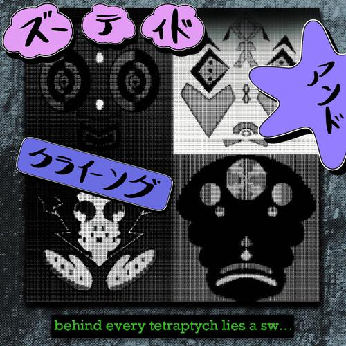

(12:00 PM, 12/23/2022)
In other news...
As of right now, the beta version of my game project is live in my Discord server. It's far from being done, but I'd love to hear what you think!
Version 1.2.2 Updates:
* New New Banner!
* New hotbar icons
* Changed some splatoon shrine stuff
* Dream Diary updated
* Button sidebar repurposed to house whatever cool gifs I want, along with the websites they're from. The original buttons will stay though.
* Discord link added to hotbar
* Lil awesome view counter at the bottom left of the screen
P.S: Both the
Redbubble and the
SCP links are being taken down from the hotbar, but you can still find them here, or you can snoop around in my code if you prefer.

(10:36 PM, 10/20/2022)
Version 1.2.1 Updates:
* New Banner!
* Brand new Splatoon Shrine
* New Dream Diary page! Check out my subconscious for free
* Polished user-interface
* Began super secret development on the "Music" and "Graveyard" pages, so no peeking
* FR@GILE-C0B is a collaborative piece between myself and
Grape Soda
(1:35 PM, 9/27/2022)
My first ever album is out now!
Hope you enjoy!

p.s. I'm currently getting my artist profile set up on spotify, so right now it's pretty barebones. I'll fix it up once I've got that done though!